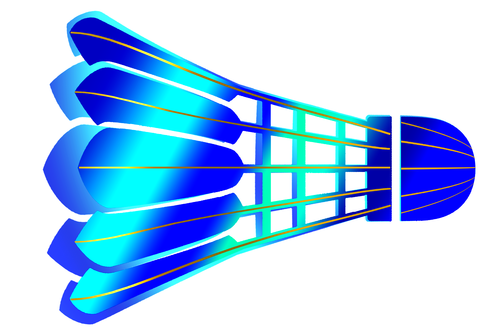

Racquets or
Rackets Brands
A badminton racquet is a lightweight piece of equipment used to hit a shuttlecock over a net in badminton
There's general 3 categories – Head Heavy, Even Balance and Head Light.
Fun Fact:The first metal badminton racquet to go on sale in Japan was the Alumina Ace, created by Limited Company Yoneyama Racquet Tokyo Factory. The Alumina Ace featured a T-joint, which was inspired by a gas tap design, to join the frame and shaft.

Top 4 Racquet Brands used by Professionals

Li-Ning
Made in:China
Used By:Lin Dan
First Racket Made in:1989
$45-$561
Yonex
Made in:Japan
Used By:Lee Chong Wei
First Racket Made in:1950
$20-$2500
Victor
Made in:Taiwan
Used By:Lee Zii Jia
First Racket Made in:1968
$130-$350
Ashaway
Made in:Rhodes Island
Used By:Jess Hopton
First Racket Made in:1949
$11-$183